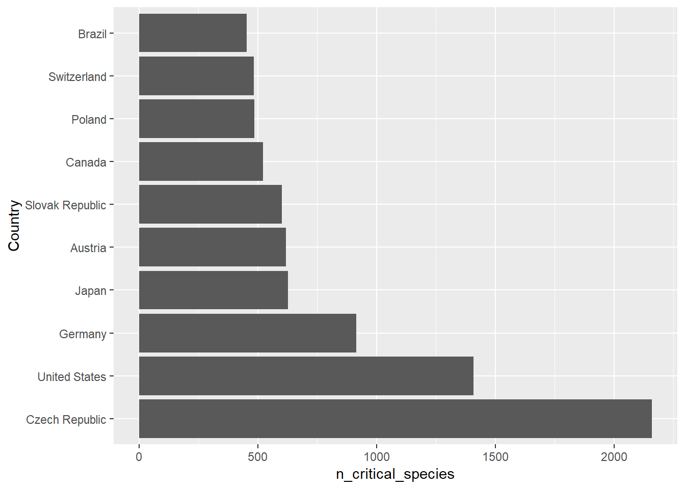
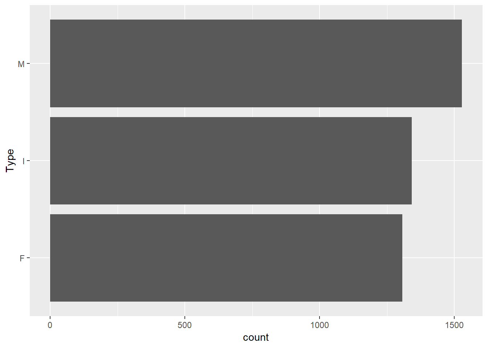

26 La grammaire graphique ggplot2
Brièvement, une grammaire graphique permet de schématiser (ma traduction de to map) des données sur des attributs esthéthiques sur des géométries. Avec cette définition, nous avons 3 composantes.
- Les données. Votre tableau est biensûr un argument nécessaire pour générer le graphique.
- Les marqueurs. Un terme abstrait pour désigner les points, les lignes, les polygonnes, les barres, les flèches, etc.
- Les attributs encodés. La position, la dimension, la couleur ou la forme que prendront les géométries. En ggplo2, on les nomme les aesthetics.
- Les attributs globaux. Les attributs sont globaux lorsqu’ils sont constant (ils ne dépendent pas d’une variable). Les valeurs par défaut conviennent généralement, mais certains attributs peuvent être spécifés: par exemple la forme ou la couleur des points, le type de ligne.
- Les thèmes. Le thème du graphique peut être spécifié dans son ensemble, c’est-à-dire en utilisant un thème prédéfini, mais l’on peut modifier certains détails.
Le flux de travail pour créer un graphique à partir d’une grammaire ressemble donc à ceci:
Avec mon tableau,
Créer un marqueur (
encoder(position X = colonne A,
position Y = colonne B,
couleur = colonne C)
forme globale = 1)
Avec un thème noir et blancLe module tidyverse instellera des modules utilisés de manière récurante dans ce cours, comme ggplot2, dplyr, tidyr et readr. Je vous recommande de l’installer et de le charger au début de vos sessions de travail.
Le tidyverse est le nom d’une nouvelle méthode de travail en R. Par rapport à l’approche classique, l’approche tidyverse est plus intuitive et mieux adaptée pour l’ensemble des tâches à accomplir en science des données. Les deux approches peuvent tout-à-fait être combinées. Nous utiliserons préférablement le tidyverse pour ce cours.
26.1 Mon premier ggplot
Pour notre premier exercice, je vais charger un tableau depuis le fichier de données abalone.data depuis un dépôt sur internet. Je n’irai pas dans les détails sur les tableaux de données, puisque c’est le sujet du prochain chapitre. Le fichier de données porte sur un escargot de mer et comprend le sexe (M: mâle, F: femelle et I: enfant), des poids et dimensions des individus obervés, et le nombre d’anneaux comptés dans la coquille.
## Parsed with column specification:
## cols(
## Type = col_character(),
## LongestShell = col_double(),
## Diameter = col_double(),
## Height = col_double(),
## WholeWeight = col_double(),
## ShuckedWeight = col_double(),
## VisceraWeight = col_double(),
## ShellWeight = col_double(),
## Rings = col_double()
## )Inspectons l’entête du tableau avec la fonction head().
## # A tibble: 6 x 9
## Type LongestShell Diameter Height WholeWeight ShuckedWeight
## <chr> <dbl> <dbl> <dbl> <dbl> <dbl>
## 1 M 0.455 0.365 0.095 0.514 0.224
## 2 M 0.35 0.265 0.09 0.226 0.0995
## 3 F 0.53 0.42 0.135 0.677 0.256
## 4 M 0.44 0.365 0.125 0.516 0.216
## 5 I 0.33 0.255 0.08 0.205 0.0895
## 6 I 0.425 0.3 0.095 0.352 0.141
## # ... with 3 more variables: VisceraWeight <dbl>, ShellWeight <dbl>,
## # Rings <dbl>Suivant la grammaire graphique ggplot2, on pourra créer ce graphique de points comprenant les attributs suivants suivants.
data = abalone, le fichier de données.mapping = aes(...), spécifié comme attribut de la fonctionggplot(), cet encodage (ouaesthetic) reste l’encodage par défaut pour tous les marqueurs du graphique. Toutefois, l’encodagemapping = aes()peut aussi être spécifié dans la fonction du marqueur (par exemplegeom_point()). Dans l’encodage global du graphique, on place en x la longueur de la coquille (x = LongestShell) et on place en y le poids de la coquille (y = ShellWeight).- Pour ajouter un marqueur, on utilise le
+. Généralement, on change aussi de ligne. - Le marqueur ajouté est un point,
geom_point(), dans lequel on spécifie un encodage de couleur sur la variable Type (colour = Type) et un encodage de dimension du point sur la variable rings (size = Rings). L’attributalpha = 0.5se situe hors du mapping et de la focntionaes(): c’est un attribut identique pour tous les points.
ggplot(data = abalone, mapping = aes(x = LongestShell, y = ShellWeight)) +
geom_point(mapping = aes(colour = Type, size = Rings), alpha = 0.5)
Il existe plusieurs types de marqueurs:
geom_pointpour les pointsgeom_linepour les lignesgeom_barpour les diagrammes en barre etgeom_histogrampour les histogrammesgeom_boxplotpour les boxplotsgeom_errorbar,geom_pointrangeougeom_crossbarpour les marges d’erreurgeom_mappour les cartes- etc.
Il existe plusieurs attributs d’encodage:
- la position
x,yetz(zpertinent notamment pour le marqueurgeom_tile()) - la taille
size - la forme des points
shape - la couleur
colour, qui peut être discrète ou continue - le type de ligne
linetype - la transparence
alpha - et d’autres types spécialisés que vous retrouverez dans la documentation des marqueurs
Les types de marqueurs et leurs encodages sont décrits dans la documentation de ggplot2, qui fournit des feuilles aide-mémoire qu’il est commode d’imprimer et d’afficher près de soi.
 Aide-mémoire de ggplot2, source: https://www.rstudio.com/resources/cheatsheets/
Aide-mémoire de ggplot2, source: https://www.rstudio.com/resources/cheatsheets/
26.1.1 Les facettes
Dans ggplot2, les facetttes sont un type spécial d’encodage utilisés pour définir des grilles de graphique. Elles prennent deux formes:
- Le collage,
facet_wrap(). Une variable catégorielle est utilisée pour segmenter les graphiques en plusieurs graphiques, qui sont placés l’un à la suite de l’autre dans un arrangement spécifié par un nombre de colonne ou un nombre de ligne. - La grille,
facet_grid(). Une ou deux variables segmentent les graphiques selon les colonnes et les lignes.
Les facettes peuvent être spécifiées n’importe où dans la chaîne de commande de ggplot2, mais conventionnellement, on les place tout de suite après la fonctio ggplot().
ggplot(data = abalone, mapping = aes(x = LongestShell, y = ShellWeight)) +
facet_wrap(~Type, ncol=2) +
geom_point(mapping = aes(colour = Type, size = Rings), alpha = 0.5)
La fonction cut() permet de discrétiser des variables continues en catérories ordonnées - les focntions peuvent être utilisées à l’intérieur de la fonction ggplot.
ggplot(data = abalone, mapping = aes(x = LongestShell, y = ShellWeight)) +
facet_grid(Type ~ cut(Rings, breaks = seq(0, 30, 5))) +
geom_point(mapping = aes(colour = Type), alpha = 0.5)
Par défaut, les axes des facettes, ainsi que leurs dimensions, sont les mêmes. Une telle représentation permet de comparer les facets sur une même échelle. Les axes peuvent être définis selon les données avec largument scales, tandis que l’espace des facettes peut être conditionné selon l’argument space - pour plus de détails, voir la fiche de documentation.
Exercice. Personnalisez le graphique avec les données abalone en remplaçant les variables et en réorganisant les facettes.
26.2 Plusieurs sources de données
Il peut arriver que les données pour générer un graphique proviennent de plusieurs tableaux. Lorsqu’on ne spécifie pas la source du tableau dans un marqueur, la valeur par défaut est le tableau spécifier dans l’amorce ggplot(). Il est néanmoins possible de définir une source personnalisée pour chaque marqueur en spécifiant data = ... comme argument du marqueur.
abalone_siteA <- data.frame(LongestShell = c(0.3, 0.8, 0.7),
ShellWeight = c(0.05, 0.81, 0.77))
ggplot(data = abalone, mapping = aes(x = LongestShell, y = ShellWeight)) +
geom_point(mapping = aes(colour = Type, size = Rings), alpha = 0.5) +
geom_point(data = abalone_siteA, size = 8, shape = 4)
26.3 Exporter avec style
Le fond gris est une marque distinctive de ggplot2. Il n’est toutefois pas apprécié de tout le monde. D’autres thèmes dits complets peuvent être utilisés (liste des thèmes complets). Les thèmes complets sont appelés avant la fonction theme(), qui permet d’effectuer des ajustements précis dont la liste exhaustive se trouve dans la documentation de ggplot2.
Vous pouvez aussi personnaliser le titre des axes (xlab() et ylab()), leur limites (xlim() et ylim()) ou spécifier un titre global (ggtitle()).
Pour exporter un ggplot, on pourra utiliser les commandes de R png(), svg() ou pdf(), ou les outils de RStudio. Toutefois, ggplot2 offre la fonction ggsave(), que l’on place en remorque du grahique, en spécifiant les dimensions (width et height) ainsi que la résolution (dpi). La résolution d’un graphique destiné à la publication est typiquement de plus de 300 dpi.
ggplot(data = abalone, mapping = aes(x = LongestShell, y = ShellWeight)) +
geom_point(mapping = aes(colour = Type, size = Rings), alpha = 0.5) +
xlab("Length (mm)") +
ylab("Shell weight (g)") +
ggtitle("Abalone") +
xlim(c(0, 1)) +
theme_classic() +
theme(axis.title = element_text(size=20),
axis.text = element_text(size=20),
axis.text.y = element_text(size=20, angle=90, hjust=0.5),
legend.box = "horizontal")
Nous allons maintenant couvrir différents types de graphiques, accessibles selon diférents marqueurs:
- les nuages de points
- les diagrammes en ligne
- les boxplots
- les histogrammes
- les diagrammes en barres
26.4 Nuages de points
L’exemple précédent est un nuage de points, que nous avons généré avec le marqueur geom_point(), qui a déjà été passablement introduit. L’exploration de ces données a permis de détecter une croissance exponentielle du poids de la coquille en fonction de sa longueur. Il est clair que les abalones juvéniles (Type I) sont plus petits et moins lourds, mais nous devrons probablement procéder à des tests statistiques pour vérifier s’il y a des différences entre mâles et femelles.
Le graphique étant très chargé, nous avons utilisé des stratégies pour l’alléger en utilisant de la transparence et des facettes. Le marqueur geom_jitter() peut permettre de mieux apprécier la dispersion des points en ajoutant une dispersion randomisée en x ou en y.
ggplot(data = abalone, mapping = aes(x = LongestShell, y = ShellWeight)) +
geom_jitter(mapping = aes(colour = Type, size = Rings), alpha = 0.5, width = 0.05, height=0.1)
Dans ce cas-ci, ça ne change pas beaucoup, mais retenons-le pour la suite.
26.5 Diagrammes en lignes
Les lignes sont utilisées pour exprimer des liens entre une suite d’information. Dans la pluaprt des cas, il s’agit d’une suite d’information dans le temps que l’on appelle les séries temporelles. En loccurence, les lignes devraient être évitées si la séquence entre les variables n’est pas évidente. Nous allons utiliser un tableau de données de R portant sur la croissance des orangers.
## Grouped Data: circumference ~ age | Tree
## Tree age circumference
## 1 1 118 30
## 2 1 484 58
## 3 1 664 87
## 4 1 1004 115
## 5 1 1231 120
## 6 1 1372 142La première colonne spécifie le numéro de l’arbre mesuré, la deuxième son âge et la troisième sa circonférence. Le marqueur geom_line() permet de tracer la tendance de la circonférence selon l’âge. En encodant la couleur de la ligne à l’arbre, nous pourrons tracer une ligne pour chacun d’entre eux.

La légende ne montre pas les numéros d’arbre en ordre croissance. En effet, la légende (tout comme les facettes) classe les catégories prioritairement selon l’ordre des catéories si elles sont ordinales, ou par ordre alphabétique si les catégories sont nominales. Inspectons la colonne Tree en inspectant le tableau aevc la commande str() - la commande glimpse() du tidyverse donne un sommaire moins complet que str().
## Classes 'nfnGroupedData', 'nfGroupedData', 'groupedData' and 'data.frame': 35 obs. of 3 variables:
## $ Tree : Ord.factor w/ 5 levels "3"<"1"<"5"<"2"<..: 2 2 2 2 2 2 2 4 4 4 ...
## $ age : num 118 484 664 1004 1231 ...
## $ circumference: num 30 58 87 115 120 142 145 33 69 111 ...
## - attr(*, "formula")=Class 'formula' language circumference ~ age | Tree
## .. ..- attr(*, ".Environment")=<environment: R_EmptyEnv>
## - attr(*, "labels")=List of 2
## ..$ x: chr "Time since December 31, 1968"
## ..$ y: chr "Trunk circumference"
## - attr(*, "units")=List of 2
## ..$ x: chr "(days)"
## ..$ y: chr "(mm)"En effet, la colonne Tree est un facteur ordinal dont les niveaux sont dans le même ordre que celui la légende.
26.6 Les histogrammes
Nous avons vu les histogrammes dans la brève section sur les fonctions graphiques de base dans R: il s’agit de segmenter l’axe des x en incréments, puis de présenter sur l’axe de y le nombre de données que l’on retrouve dans cet incrément. Le marqueur à utiliser est geom_histogram().
Revenons à nos escargots. Comment présenteriez-vous la longueur de la coquille selon la variable Type? Selon des couleurs ou des facettes? La couleur, dans le cas des histogrammes, est celle du pourtour des barres. Pour colorer l’intérieur des barres, l’argument à utiliser est fill.
ggplot(data = abalone, mapping = aes(x = LongestShell)) +
geom_histogram(mapping = aes(fill = Type), colour = 'black')## `stat_bin()` using `bins = 30`. Pick better value with `binwidth`.
On n’y voit pas grand chose. Essayons plutôt les facettes.
## `stat_bin()` using `bins = 30`. Pick better value with `binwidth`.
Les facettes permettent maintenant de bien distinguer la distribution des longueur des juvéniles. L’argument bins, tout comme l’argument breaks du module graphique de base, permet de spécifier le nombre d’incréments, ce qui peut être très utile en exploration de données.
ggplot(data = abalone, mapping = aes(x = LongestShell)) +
facet_grid(Type ~ .) +
geom_histogram(bins=60, colour = 'white')
Le nombre d’incréments est un paramètre qu’il ne faut pas sous-estimer. À preuve, ce tweet de [@NicholasStrayer](https://twitter.com/NicholasStrayer):
Histograms are fantastic, but make sure your bin-width/number is chosen well. This is the exact same data, plotted with different bin-widths. Notice that the pattern doesn't necessarily get clearer as bin num increases. #dataviz pic.twitter.com/3MhSFwTVPH
— Nick Strayer (@NicholasStrayer) 7 août 2018
26.7 Boxplots
Les boxplots sont une autre manière de visualiser des distributions. L’astuce est de créér une boîte qui s’étant du premier quartile (valeur où l’on retrouve 25% de données dont la valeur est inférieure) au troisième quartile (valeur où l’on retrouve 75% de données dont la valeur est inférieure). Une barre à l’intérieur de cette boîte est placée à la médiane (qui est en fait le second quartile). De part et d’autre de la boîte, on retrouve des lignes spécifiant l’étendue hors quartile. Cette étendue peut être déterminée de plusieurs manières, mais dans le cas de ggplot2, il s’agit de 1.5 fois l’étendue de la boîte (l’écart interquartile). Au-delà de ces lignes, on retourve les points représentant les valeurs extrêmes. Le marqueur à utiliser est geom_boxplot(). L’encodage x est la variable catégorielle et l’encodage y est la variable continue.

Exercice. On suggère parfois de présenter les mesures sur les boxplots. Utiliser geom_jitter avec un bruit horizontal.
26.8 Les diagrammes en barre
Les diagrammes en barre représente une variable continue associée à une catégorie. Les barres sont généralement horizontales et ordonnées. Nous y reviendrons à la fin de ce chapitre, mais retenez pour l’instant que dans tous les cas, les diagrammes en barre doivent inclure le zéro pour éviter les mauvaises interprétations.
Pour les diagrammes en barre, nous allons utiliser les données de l’union internationale pour la conservation de la nature distribuées par l’OCDE.
## Parsed with column specification:
## cols(
## IUCN = col_character(),
## `IUCN Category` = col_character(),
## SPEC = col_character(),
## Species = col_character(),
## COU = col_character(),
## Country = col_character(),
## `Unit Code` = col_character(),
## Unit = col_character(),
## `PowerCode Code` = col_double(),
## PowerCode = col_character(),
## `Reference Period Code` = col_logical(),
## `Reference Period` = col_logical(),
## Value = col_double(),
## `Flag Codes` = col_logical(),
## Flags = col_logical()
## )## Warning: 20 parsing failures.
## row col expected actual file
## 2293 Flag Codes 1/0/T/F/TRUE/FALSE E 'data/WILD_LIFE_16082018051732754.csv'
## 2293 Flags 1/0/T/F/TRUE/FALSE Estimated value 'data/WILD_LIFE_16082018051732754.csv'
## 2296 Flag Codes 1/0/T/F/TRUE/FALSE E 'data/WILD_LIFE_16082018051732754.csv'
## 2296 Flags 1/0/T/F/TRUE/FALSE Estimated value 'data/WILD_LIFE_16082018051732754.csv'
## 2323 Flag Codes 1/0/T/F/TRUE/FALSE E 'data/WILD_LIFE_16082018051732754.csv'
## .... .......... .................. ............... ......................................
## See problems(...) for more details.## # A tibble: 6 x 15
## IUCN `IUCN Category` SPEC Species COU Country `Unit Code` Unit
## <chr> <chr> <chr> <chr> <chr> <chr> <chr> <chr>
## 1 TOT_~ Total number o~ MAMM~ Mammals AUS Austra~ NBR Numb~
## 2 ENDA~ Number of enda~ MAMM~ Mammals AUS Austra~ NBR Numb~
## 3 CRIT~ Number of crit~ MAMM~ Mammals AUS Austra~ NBR Numb~
## 4 VULN~ Number of vuln~ MAMM~ Mammals AUS Austra~ NBR Numb~
## 5 THRE~ Total number o~ MAMM~ Mammals AUS Austra~ NBR Numb~
## 6 TOT_~ Total number o~ MAMM~ Mammals AUT Austria NBR Numb~
## # ... with 7 more variables: `PowerCode Code` <dbl>, PowerCode <chr>,
## # `Reference Period Code` <lgl>, `Reference Period` <lgl>, Value <dbl>,
## # `Flag Codes` <lgl>, Flags <lgl>Ne vous en faites pas pour le message d’avertissement: le tableau devrait être bien importé. Je verrai à corriger cela dans une future version de ces notes.
L’exercice consiste à créer un diagramme en barres horizontales du nombre d’espèces menacées de manière critique pour les 10 pays qui en contiennent le plus. Je vais effectuer quelques opérations sur ce tableau afin d’en arriver avec un tableau que nous pourrons convenablement mettre en graphique: n’y portez pas trop attention pour l’instant: ces opérations sont un avant-goût du prochain chapitre.
Nous allons filter le tableau pour obtenir les espèces critiquement menacées, sélectionner seuleent le pays et le nombre d’espèces, les grouper par pays, additionner toutes les espèces pour chaque pays, les placer en ordre descendant et enfin sélectionner les 10 premiers. Comme vous le voyez, la création de graphique est liée de près avec la maipulation des tableaux!
especes_crit <- especes_menacees %>%
filter(IUCN == 'CRITICAL') %>%
select(Country, Value) %>%
group_by(Country) %>%
summarise(n_critical_species = sum(Value)) %>%
arrange(desc(n_critical_species)) %>%
head(10)
especes_crit## # A tibble: 10 x 2
## Country n_critical_species
## <chr> <dbl>
## 1 Czech Republic 2159
## 2 United States 1409
## 3 Germany 915
## 4 Japan 628
## 5 Austria 618
## 6 Slovak Republic 602
## 7 Canada 522
## 8 Poland 485
## 9 Switzerland 483
## 10 Brazil 453Le premier type de diagramme en barre que nous allons couvrir est obtenu par le marqueur geom_col().

Ce graphique est perfectible. Les barres sont verticales et non ordonnées. Souvenons-nous que ggplot2 ordonne par ordre alphabétique si aucun autre ordre est spécifié. Nous pouvons changer l’ordre en changeant l’ordre des niveaux de la variable Country selon le nombre d’espèces. Il s’avère que cet ordre est déjà défini par la colonne especes_crit$Country.
Pour faire pivoter le graphique, nous ajoutons coord_flip() à la séquence.
ggplot(data = especes_crit, mapping = aes(x = Country, y = n_critical_species)) +
geom_col() +
coord_flip()
Nous n’y sommes pas encore. Normalement, la valeur la plus élevée se retouve en haut! Pas de problème, il s’agit de renverser le vecteur d’ordre avec la fonction rev().
especes_crit$Country <- factor(especes_crit$Country, levels = rev(especes_crit$Country))
ggplot(data = especes_crit, mapping = aes(x = Country, y = n_critical_species)) +
geom_col() +
coord_flip()
Une autre méthode, geom_bar(), est un raccourcis permettant de compter le nombre d’occurence d’une variable unique. Par exemple, dans le tableau abalone, le nombre de fois que chaque niveau de la variable Type

Personnellement, je préfère passer par un diagramme en lignes avec le marqueur geom_segment(). Cela me donne la flexibilité pour définir un largeur de trait et éventellement d’ajouter un point au bout pour en faire un diagramme en suçon.
ggplot(data = especes_crit, mapping = aes(x = Country, y = n_critical_species)) +
geom_segment(mapping = aes(xend=Country, yend = 0), lwd = 2) +
geom_point(size=6) +
coord_flip() +
theme_bw()
Les diagrammes en barre peuvent être placés en relation avec d’autres. Reprenons notre manipulation de données précédente, mais en incluant tous les pays.
especes_pays_iucn <- especes_menacees %>%
filter(IUCN %in% c('ENDANGERED', 'VULNERABLE','CRITICAL')) %>%
select(IUCN, Country, Value) %>%
group_by(Country, IUCN) %>%
summarise(n_species = sum(Value)) %>%
group_by(Country) %>%
mutate(n_tot = sum(n_species)) %>%
arrange(desc(n_tot))
head(especes_pays_iucn)## # A tibble: 6 x 4
## # Groups: Country [2]
## Country IUCN n_species n_tot
## <chr> <chr> <dbl> <dbl>
## 1 Czech Republic CRITICAL 2159 7567
## 2 Czech Republic ENDANGERED 2386 7567
## 3 Czech Republic VULNERABLE 3022 7567
## 4 United States CRITICAL 1409 6005
## 5 United States ENDANGERED 1631 6005
## 6 United States VULNERABLE 2965 6005Pour l’ordre des pays, jouons un peu avec R.
ordre_pays <- especes_pays_iucn %>%
select(Country, n_tot) %>%
unique() %>%
arrange(n_tot) %>%
select(Country)
especes_pays_iucn$Country <- factor(especes_pays_iucn$Country,
levels = pull(ordre_pays))Pour placer les barres les unes à côté des autres, nous spécifions position = "dodge".
ggplot(data = especes_pays_iucn, mapping = aes(x = Country, y = n_species)) +
geom_col(aes(fill=IUCN), position = "dodge") +
coord_flip()
Il est parfois plus pratique d’utiliser les facettes.
ggplot(data = especes_pays_iucn, mapping = aes(x = Country, y = n_species)) +
facet_grid(IUCN ~ .) +
geom_col() +
coord_flip()
26.9 Exporter un graphique
Plus besoin d’utiliser la fonction png() en mode ggplot2. Utilisons plutôt ggsave().
ggplot(data = especes_pays_iucn, mapping = aes(x = Country, y = n_species)) +
facet_grid(IUCN ~ .) +
geom_col(aes(fill=IUCN)) +
coord_flip()